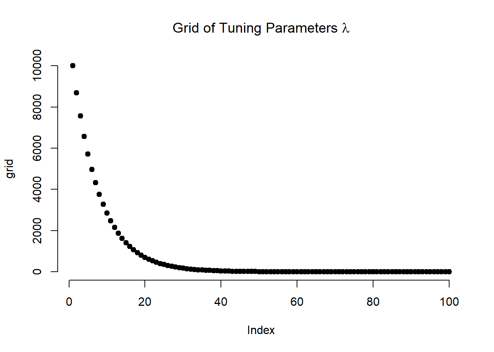
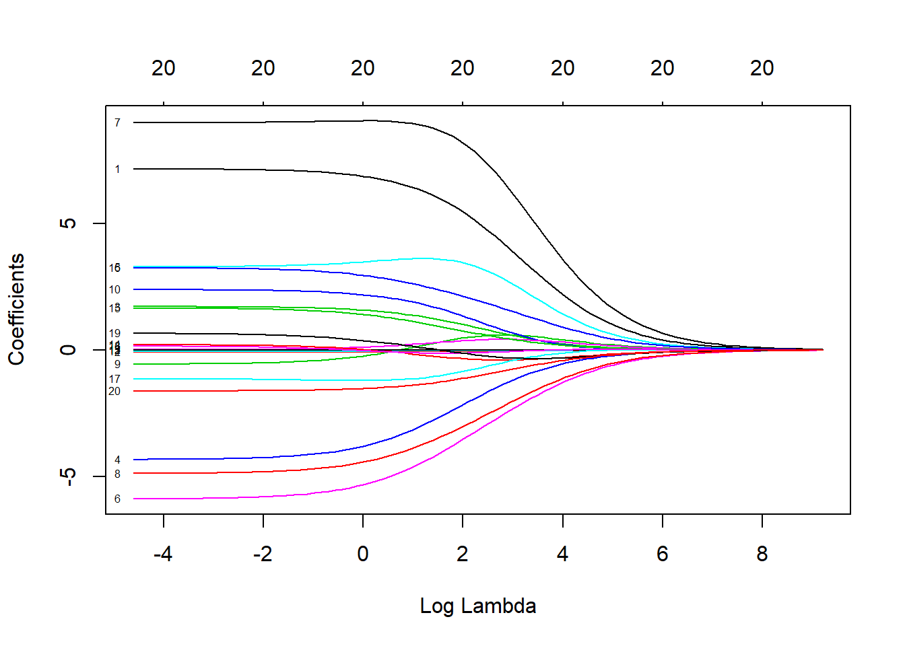
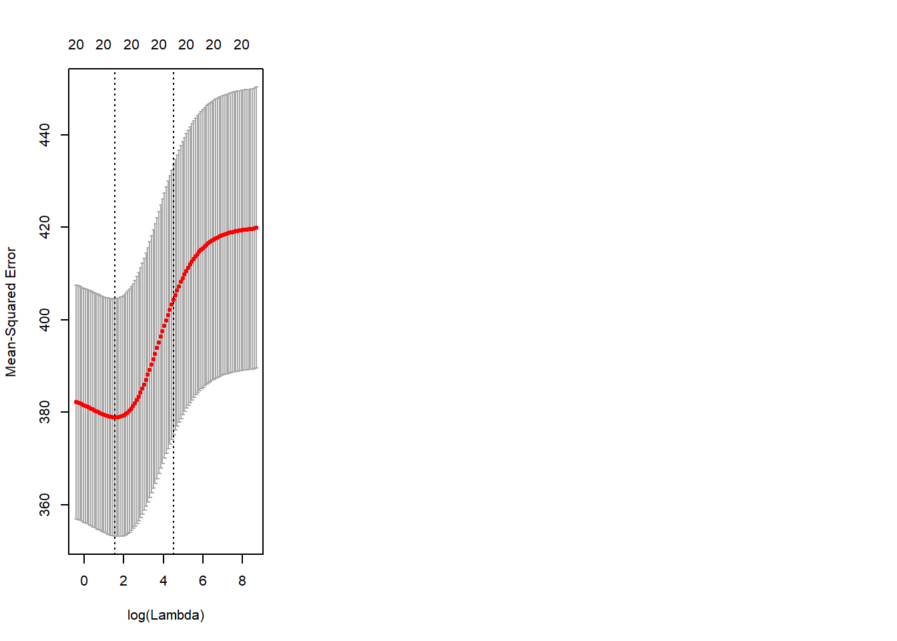
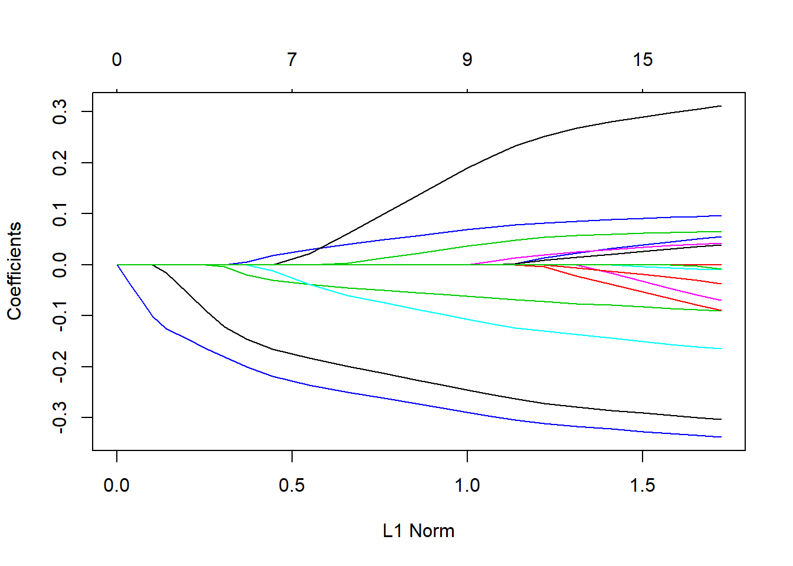
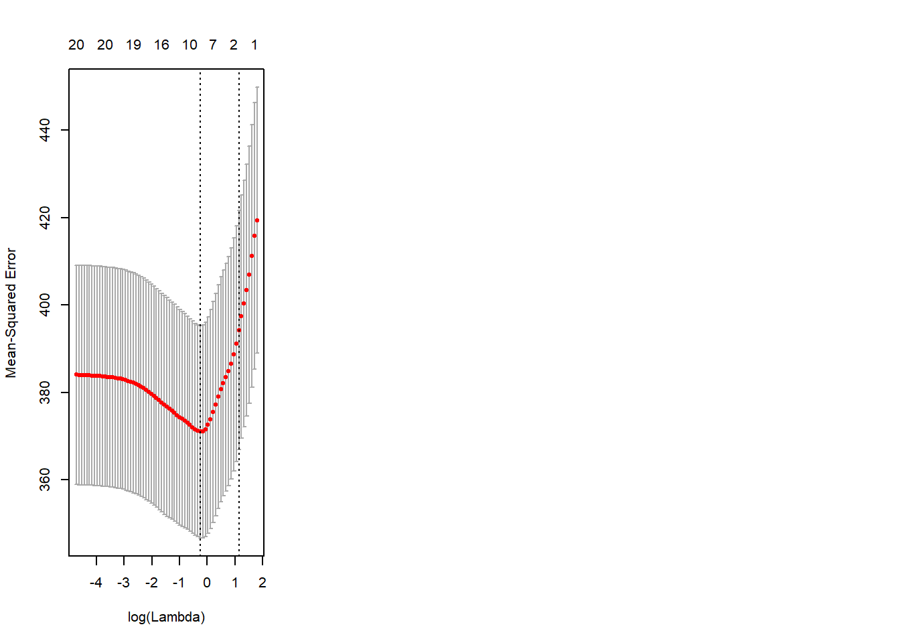

We start by clearing our workspace, loading the foreigners data, and doing the necessary variable manipulations.
# clear workspace
rm(list=ls())
# load foreigners data
load("your directory/BSAS_manip.RData")
head(data2)
# we declare the factor variables
data2$urban <- factor(data2$urban, labels = c("rural", "more rural", "more urban", "urban"))
data2$RSex <- factor(data2$RSex, labels = c("Male", "Female"))
data2$health.good <- factor(data2$health.good, labels = c("bad", "fair", "fairly good", "good") )In order to run ridge regression, we create a matrix from our dataset using the model.matrix() function. We also need to remove the intercept from the resulting matrix because the function to run ridge regression automatically includes one. Furthermore, we will use the subjective rate of immigrants as response. Consequently, we have to remove over.estimate as it measures the same thing. Otherwise, it would be somewhat similar to predicting height measured in inches using as a predictor whether the person is taller than 70 inches. Lastly, the party affiliation dummies are mutually exclusive, se we have to exclude the model category Cons.
# covariates in matrix form
x <- model.matrix(IMMBRIT ~ ., data2)
# drop the intercept and over.estimate & Cons
drop <- which(colnames(x) %in% (c("(Intercept)", "over.estimate", "Cons")))
x <- x[, -drop]
# check if it looks fine
head(x)## RSexFemale RAge Househld Lab SNP Ukip BNP GP party.other paper
## 1 0 50 2 1 0 0 0 0 0 0
## 2 1 18 3 0 0 0 0 0 1 0
## 3 1 60 1 0 0 0 0 0 1 0
## 4 1 77 2 0 0 0 0 0 1 1
## 5 1 67 1 0 0 0 0 0 1 0
## 6 0 30 4 0 0 0 0 0 1 1
## WWWhourspW religious employMonths urbanmore rural urbanmore urban
## 1 1 0 72 0 0
## 2 4 0 72 0 0
## 3 1 0 456 0 1
## 4 2 1 72 0 0
## 5 1 1 72 0 1
## 6 14 0 72 0 0
## urbanurban health.goodfair health.goodfairly good health.goodgood HHInc
## 1 1 1 0 0 13
## 2 1 0 1 0 3
## 3 0 0 0 1 9
## 4 0 0 0 1 8
## 5 0 0 0 1 9
## 6 0 0 1 0 9# response vector
y <- data2$IMMBRITThe glmnet package provides functionality to fit ridge regression and lasso models. We load the package and call glmnet() to perform ridge regression.
library(glmnet)## Loading required package: Matrix## Loading required package: foreach## foreach: simple, scalable parallel programming from Revolution Analytics
## Use Revolution R for scalability, fault tolerance and more.
## http://www.revolutionanalytics.com## Loaded glmnet 2.0-10# tuning parameter
grid <- 10^seq(4, -2, length = 100)
plot(grid, bty = "n", pch = 19,
main = expression(paste("Grid of Tuning Parameters ", lambda)))
# run ridge; alpha = 0 means do ridge
ridge.mod <- glmnet(x, y, alpha = 0, lambda = grid)
# coefficient shrinkage visualized
plot(ridge.mod, xvar = "lambda", label = TRUE)
# a set of coefficients for each lambda
dim(coef(ridge.mod))## [1] 21 100We can look at the coefficients at different values for \(\lambda\). Here, we randomly choose two different values and notice that smaller values of \(\lambda\) result in larger coefficient estimates and vice-versa.
# Lambda and Betas
ridge.mod$lambda[80]## [1] 0.1629751coef(ridge.mod)[, 80]## (Intercept) RSexFemale RAge
## 39.032833601 7.099569260 -0.077723547
## Househld Lab SNP
## 1.693057342 -4.221028234 3.322375300
## Ukip BNP GP
## -5.770869931 8.988511673 -4.785054788
## party.other paper WWWhourspW
## -0.493813961 2.351267144 -0.042205976
## religious employMonths urbanmore rural
## 0.032847310 0.003402161 0.174072630
## urbanmore urban urbanurban health.goodfair
## 1.611492994 3.189323208 -1.160999582
## health.goodfairly good health.goodgood HHInc
## 0.109245639 0.597683773 -1.595986498sqrt( sum(coef(ridge.mod)[-1, 80]^2) )## [1] 15.55516ridge.mod$lambda[40]## [1] 43.28761coef(ridge.mod)[, 40]## (Intercept) RSexFemale RAge
## 32.397820379 2.545342557 -0.018759752
## Househld Lab SNP
## 0.310894459 -0.650535855 1.683631453
## Ukip BNP GP
## -1.486092735 4.138393345 -1.297450544
## party.other paper WWWhourspW
## 0.464851984 0.295693655 -0.016130971
## religious employMonths urbanmore rural
## 0.348265533 -0.004899983 -0.323446701
## urbanmore urban urbanurban health.goodfair
## 0.232753980 1.046907693 -0.152239958
## health.goodfairly good health.goodgood HHInc
## 0.002537239 -0.328775171 -0.472606701sqrt(sum(coef(ridge.mod)[-1, 40]^2))## [1] 5.734655We can get ridge regression coefficients for any value of \(\lambda\) using predict.
# compute coefficients at lambda = s
predict(ridge.mod, s = 50, type = "coefficients")[1:21, ]## (Intercept) RSexFemale RAge
## 32.102065777 2.316842251 -0.016749575
## Househld Lab SNP
## 0.272887080 -0.575654158 1.522106250
## Ukip BNP GP
## -1.351681901 3.775662599 -1.179527530
## party.other paper WWWhourspW
## 0.432557099 0.247647849 -0.014851506
## religious employMonths urbanmore rural
## 0.327572876 -0.004676662 -0.304256829
## urbanmore urban urbanurban health.goodfair
## 0.206429903 0.961831864 -0.120177346
## health.goodfairly good health.goodgood HHInc
## 0.008647552 -0.318723921 -0.428000409Next, we can use cross-validation on ridge regression by first splitting the dataset into training and test subsets.
# cross-validate lambda by splitting dataset into training and test
set.seed(1)
train <- sample(1:nrow(x), nrow(x) * .5)
y.test <- y[-train]We estimate the parameters with glmnet() over the training set and predict the values on the test set to calculate the validation error.
# fit on training set
ridge.m <- glmnet(x[train, ], y[train], alpha = 0, lambda = grid, thresh = 1e-12)
# predict with lambda = 4
ridge.p <- predict(ridge.m, s = 4, newx = x[-train, ])
# MSE on test data
mean( (ridge.p - y.test)^2 )## [1] 397.5339# maximal error?
mean( (mean(y[train]) - y.test)^2)## [1] 469.0082In the previous example, we used \(\lambda=4\) when evaluating the model on the test set. We can use a large value for \(\lambda\) and see the difference in mean error.
# try for large lambda
ridge.p2 <- predict(ridge.m, s = 1e+4, newx = x[-train, ])
mean((ridge.p2 - y.test)^2)## [1] 468.7094We can also compare the results with a least squares model where \(\lambda = 0\).
# compare to standard logistic regression where lambda is 0
ridge.p <- predict(ridge.m, s = 0, newx = x[-train, ], exact = TRUE)
mean( (ridge.p - y.test)^2 )## [1] 398.0469# standard lm
lm.data <- data.frame(IMMBRIT = y, x)
lm.m <- lm(IMMBRIT ~ ., data = lm.data, subset = train)
lm.p <- predict(lm.m, newdata = lm.data[-train,])
mean( (lm.p - y.test)^2 )## [1] 398.0471We can choose different values for \(\lambda\) by running cross-validation on ridge regression using cv.glmnet().
set.seed(1)
# training data for CV to find optimal lambda, but then test data to estimate test error
cv.out <- cv.glmnet(x[train, ], y[train], alpha = 0)
plot(cv.out)
# best performing model's lambda value
bestlam <- cv.out$lambda.min
bestlam## [1] 4.661975The best performing model is the one with \(\lambda = 4.661975\)
# predict outcomes using best cross-validated lambda
ridge.pred <- predict(ridge.mod, s = bestlam, newx = x[-train, ])
mean((ridge.pred - y.test)^2)## [1] 382.9461Finally, we run ridge regression on the full dataset and examine the coefficients for the model with the best MSE.
# ridge on full data
out <- glmnet(x, y, alpha = 0)
predict(out, type = "coefficients", s = bestlam)[1:21, ]## (Intercept) RSexFemale RAge
## 37.108971018 5.975675191 -0.058243019
## Househld Lab SNP
## 1.201411861 -2.627752811 3.595667572
## Ukip BNP GP
## -4.050571927 8.659645549 -3.425693921
## party.other paper WWWhourspW
## 0.322628218 1.634179295 -0.033874988
## religious employMonths urbanmore rural
## 0.310882881 -0.001570349 -0.260126816
## urbanmore urban urbanurban health.goodfair
## 0.941168677 2.370721191 -1.006675073
## health.goodfairly good health.goodgood HHInc
## -0.127698999 0.002023967 -1.250802736The lasso model can be estimated in the same way as ridge regression. The alpha = 1 parameter tells glmnet() to run lasso regression instead of ridge regression.
lasso.mod <- glmnet(x[train, ], y[train], alpha = 1, lambda = grid)
plot(lasso.mod)
Similarly, we can perform cross-validation using identical step as we did in the last exercise on ridge regression.
# cross-validation to pick lambda
set.seed(1)
cv.out <- cv.glmnet(x[train, ], y[train], alpha = 1)
plot(cv.out)
bestlam <- cv.out$lambda.min
lasso.pred <- predict(lasso.mod, s = bestlam, newx = x[-train, ])
mean((lasso.pred - y.test)^2)## [1] 394.6538We can compare these results with ridge regression by examining the coefficient estimates.
# compare to ridge regression
out <- glmnet(x, y, alpha = 1, lambda = grid)
lasso.coef <- predict(out, type = "coefficients", s = bestlam)[1:20, ]
lasso.coef## (Intercept) RSexFemale RAge
## 38.33817372 5.56885646 -0.03537519
## Househld Lab SNP
## 1.04432437 -1.47934921 0.00000000
## Ukip BNP GP
## -0.61403293 5.50747627 0.00000000
## party.other paper WWWhourspW
## 0.00000000 0.11484358 0.00000000
## religious employMonths urbanmore rural
## 0.00000000 0.00000000 0.00000000
## urbanmore urban urbanurban health.goodfair
## 0.00000000 0.44611691 0.00000000
## health.goodfairly good health.goodgood
## 0.00000000 0.00000000lasso.coef[lasso.coef != 0]## (Intercept) RSexFemale RAge Househld Lab Ukip
## 38.33817372 5.56885646 -0.03537519 1.04432437 -1.47934921 -0.61403293
## BNP paper urbanurban
## 5.50747627 0.11484358 0.44611691In this exercise, we will predict the number of applications received using the College data set. You need to load libary(ISLR) and then type ?College to get the codebook.
We will now try to predict the per capita crime rate in the Boston data set. The Boston data set is in the MASS library.
detachAllPackages <- function() {
basic.packages <- c("package:stats","package:graphics","package:grDevices","package:utils","package:datasets","package:methods","package:base")
package.list <- search()[ifelse(unlist(gregexpr("package:",search()))==1,TRUE,FALSE)]
package.list <- setdiff(package.list,basic.packages)
if (length(package.list)>0) for (package in package.list) detach(package, character.only=TRUE)
}
detachAllPackages()
# keep on detaching namespaces
unloadNamespace("AER")
unloadNamespace("car")
unloadNamespace("mgcv")
unloadNamespace("Amelia")
unloadNamespace("pbkrtest")
unloadNamespace("lme4")